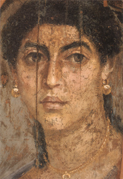
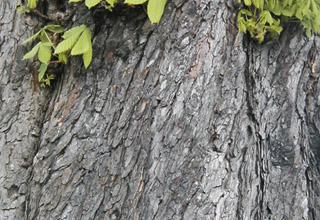
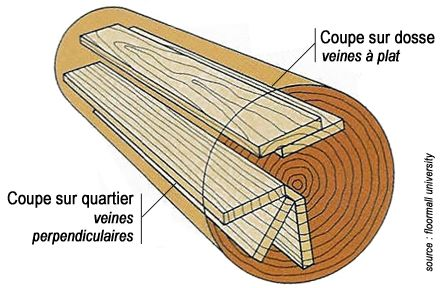

Cennino
Cennini
préconisait
deux essences : le tilleul et le saule. De
fait, le tilleul a été utilisé comme support
d'antiques portraits du Fayoum (exemple ci-contre -
lire passage in
Les cires utilisées comme liants), dont la
conservation est
exceptionnelle.
Vinci, entre autres maîtres,
conseillait l'assemblage des plaques et le
contre-collage. De fait, avant et après lui, cette
pratique s'est imposée et a
fait ses preuves. Ce choix pourrait finalement
s'avérer au moins aussi important que
celui de l'essence. Bien ajustées, plaques et lattes
semblent en effet
équilibrer leur tensions.
Une distinction a été faite
depuis longtemps entre
deux types de bois :
* le
bois dit tendre - en fait pas forcément tendre -,
c'est-à-dire celui des conifères
* le
bois dit dur - en fait pas forcément dur -, celui
des feuillus.
Le bois tendre est souvent
considéré comme
"nerveux", "mouvant". Il est déconseillé pour cette
raison
par certains auteurs. Pourtant, sous forme
assemblée, il est performant, nous
aurons l'occasion d'y revenir.
L'utilisation actuelle du bois comme support pour la
peinture correspond
principalement à trois contextes :
* l'apprentissage, la
réalisation de nombreux tableaux (Isorel
®)
* le
marouflage
* les travaux plastiques
professionnels exploitant essentiellement
* les petites surfaces
* les très grandes
surfaces décomposées en petites surfaces.
Pour des raisons de poids et parce que toiles et
papiers se sont imposés,
les autres formats sont moins utilisés.
Quel
bois ?

Traditionnellement, l'emploi de certaines espèces ont
été recensés :
*
le chêne
*
le cèdre
*
le tilleul
*
le saule
*
le châtaigner
*
le hêtre
*
le noyer
*
le peuplier (ex. : la Joconde)
*
le pin - assez proche, on nous signale aussi l'épicéa
qui contiendrait moins de résines
*
l'acajou, d'emploi plus récent, n'attire pas
les vers à bois.
*
l'okoumé est également mentionné par Xavier
de
Langlais comme support d'emploi récent
utilisable
"à la rigueur". Ce sujet semble pouvoir prêter
à polémique.
Précisons que
l'okoumé, provenant d'Afrique équatoriale
occidentale est le principal constituant des bois
assemblés modernes en
provenance de cette région, voire peut-être de certains
agglomérés. Comme
l'acajou, l'okoumé résiste bien à différents insectes,
mais pas aux
termites. Cependant, toutes les sources s'accordent
à mentionner sa forte réactivité
à l'humidité.
Nous nous permettrons donc d'émettre tout à fait
exceptionnellement une réserve vis-à-vis de
l'affirmation
du Maître Xavier de Langlais, selon laquelle les
agglomérés d'acajou et d'okoumé sont de
bons supports. Ils ne sont pas assemblés et leur
agglutinant est en contact
direct avec l'extérieur. Un aggloméré réalisé avec de
l'okoumé et une
mauvaise colle risque de réagir fortement à l'humidité
et d'attirer une
population mycologique inopportune, sans
parler de la fragilité du support. Voir plus loin L'aggloméré.
Les conifères sont généralement peu appréciés. Xavier
de Langlais
mentionne l'utilisation "dans le midi" du cèdre
et du pin
"qui n'offraient pas cependant pour cet usage toutes
les garanties !"
Pourtant, cette utilisation traditionnelle n'est pas
tout à fait dénué de
fondement : le même auteur affirme que les panneaux
de bois assemblés de
nature tendre (comme le pin notamment) "se déforment
moins que les bois
durs sous l'action de l'humidité".
Quel que soit le bois, l'emploi de vermifuges n'est pas
anodin et peut altérer la couche peinte, ce
qui fait l'intérêt de l'acajou.
La qualité des bois assemblés (c'est-à-dire la plupart
des bois utilisés en peinture)
dépend beaucoup de celle des colles d'assemblage.
Un bois sous quelle forme
?
Le débit et l'assemblage permettent d'utiliser des
supports de dimensions et
de propriétés variées :
le
panneau massif
Il est malheureusement débité "sur dosse",
c'est-à-dire dans le
sens de la longueur du tronc et sur sa largeur entière.
Il se courbe en vieillissant parce qu'il est composé de
deux éléments qui s'altèrent de
manière différente :
* le coeur, déjà sec, ne
change guère,
* l'aubier, réparti en
deux masses, de part et d'autre du coeur, rétrécit en
séchant.
Le phénomène est accentué lorsque le revers est exposé
à l'air.
L'enduction du revers avec des produits contemporains
efficaces tels que du vinyle ou un vernis adapté, peut
limiter les dégâts (voir contre-collage).
Le remède des anciens peintres était tranchant :
éviter l'emploi de bois
débité sur dosse, lui préférer les
coupes sur quartier dont il existe deux
types : la coupe sur quartier théorique et la coupe
sur quartier pratique.
Sensiblement équivalentes au point de vue du peintre,
elles sont plus
difficiles à réaliser que la coupe sur dosse et offrent
un rendement
inférieur pour l'entrepreneur.

Xavier de Langlais mentionne une opération nécessaire
pour toute surface
d'un mètre carré ou plus : le parquetage.
Nécessitant des outils
spécifiques, nous n'avons pas souhaité nous étendre sur
cette préparation
qui sera, de toute façon, réalisée par des spécialistes
du bois.
Les peintres primitifs ont préféré au panneau massif
des assemblages de lattes de bois comparables au latté
contemporain. Dans l'ensemble, leurs travaux se sont
bien conservés.
Il semble que les panneaux faits d'un seul bloc ne
peuvent être employés
- aussi magnifiques soient-ils - pour les grandes
tailles que moyennant des garanties de qualité
exceptionnelle.
Les épaisseurs recommandées en fonction des dimensions
ne peuvent être
indiquées car elles dépendent du bois choisi et de la
coupe.
Le
contreplaqué
A priori (car l'invention est récente et nous manquons
de recul pour juger),
il serait un très bon support pour les tableaux de
petite taille (60 cm au
maximum dans la plus grande dimension, avec un épaisseur
avoisinant alors le
centimètre). Il suffit de l'enduire, au revers comme
à l'avers, d'un liant vinylique ou acrylique. Les
enduits-colles à la caséine peuvent être utilisés
lorsque les dimensions, rapportées à l'épaisseur,
suggèrent une solidité suffisante. Ces produits n'étant
pas très souples, le support doit être très rigide. La colle de peau, elle, crée
de fortes tensions et ne peux être conseillée.
Le
latté
C'est le seul support avéré correct pour les œuvres de
bonne taille. Il s'apparente
aux
assemblages anciens. L'apprêt
d'encollage doit être disposé sur les deux faces, comme
pour le contreplaqué. Solide, il autorise l'emploi
d'enduits-colles à la caséine. Il
faut cependant veiller à choisir des plaques présentant
une épaisseur
raisonnablement en rapport avec la grandeur de la
surface. En cas de doute sur la rigidité du support,
l'emploi d'un liant vinylique ou acrylique est
préférable.
L'aggloméré
Il est boudé par les peintres car empli de colles de
compositions incontrôlables
qui sont directement en contact avec l'extérieur. De
plus, il est difficile à préparer et
fragile.
Certains agglomérés, le Copopan ® et
l'Isopan ® semblent cependant présenter
des propriétés intéressantes selon Xavier
de
Langlais. Une source flamande au demeurant
intéressante mentionne
également ces produits : http://users.pandora.be/werner.de.wree1/1%20olieverf.htm.
Après une courte enquête, si le Copopan ® semble
identifié comme un
agglomérat de copeaux présentant probablement une
qualité hors norme, l'Isopan
® semble un mystère. Ce terme désigne en effet des
plaques d'aluminium
thermo-isolantes, des produits de réparation pour
carrosseries automobiles à
base de fibre de verre, etc., mais nous n'avons pas su
identifier la moindre
substance de ce nom ressemblant à du bois !
Toute information à ce sujet sera
bienvenue.
L'Isorel
®
Lire l'article
du glossaire
C'est une planche fine (environ 5 mm, souvent moins)
fabriqué par projection de bois
pulvérulent et de colle - théoriquement de la colle
de
poisson. Elle peut être découpée à façon. Elle a
une face totalement
lisse et une autre très rugueuse.
La face lisse peut être des avantages pour certains
travaux, par rapport à la toile. La plupart des anciens
maîtres, qui recherchaient une surface la plus
lisse possible, auraient apprécié ce support. Les
peintres utilisant le verso rugueux sont cependant assez
nombreux aujourd'hui.
Il faut signaler l'intérêt de ce support pour
l'apprentissage de la
peinture : c'est un bois peu coûteux présentant, on
l'a vu, deux grains
différents, que l'on peut se procurer à la découpe ou
sous forme de chutes
dans n'importe quel magasin de bricolage. Il se prête
parfaitement aux tests
picturaux.
Voir
absolument
Préparation
de l'Isorel ®.
Le
"médium" MDF
C'est une variante récente d'agglomérat bois-colle. Le
"Medium Density Fiberboard" (panneau de fibres de
moyenne densité) est réalisé à partir d'essences
diverses - y compris résineuses - réduites en poudre et
traitées à la vapeur avant d'être encollés à l'aide
d'une colle synthétique (polyuréthane ?),
ce qui n'est guère original. Plus remarquable est le
fait qu'il peut être ignifugé ou hydrofugé "dans la
masse", lors de la fabrication. Par ailleurs il se
déformerait peu, ne se fendrait pas et n'éclaterait pas
(informations non confirmées).
Les plaques, épaisses de quelques millimètres à
quelques centimètres pour des dimensions conséquentes
(plusieurs mètres), peuvent être couvertes - en usine -
d'une couche de mélamine,
d'un film
PVC, de papier ou de vernis
divers.
Non recouvertes, elles pourraient être assemblées
(plaquées) à l'aide de colles vinyliques ou "UF"
(urée-formol).
La masse volumique se situe autour de 600 à
800g/m2, ce qui est assez peu.
On a peu d'informations concernant l'enduction. Une
précision cependant : les faces usinées (sciées)
sont plus poreuse et doivent normalement être enduites
de l'une des colles mentionnées ci-dessus.
En principe, ce support a
vocation décorative.
Il peut tout à fait être peint directement ou
laqué mais on n'a guère d'informations sur le long terme
ni sur la qualité de l'accrochage de certaines peintures
sur ce support. Il est aussi employé pour maroufler des
oeuvres.
Notons enfin que le « médium » engendrerait plus
de poussières au sciage qu'un bois "classique". Ces
poussières contiendraient - c'est bien normal - des
résidus dégradés de colle, dont entre autres du monoxyde
de carbone, des oxydes d'azote et de soufre et de l'aldéhyde
formique (source :
strategis.ic.gc.ca). Selon la même source, "La
qualité du MDF et la fiabilité de ses propriétés ont
réalisé des progrès considérables au cours des 10
dernières années" (texte de 2006), ce qui signifie
que ce support n'a très probablement pas encore atteint
une formulation et un traitement "définitifs". Très
séduisant à plusieurs points de vue, il ne constitue pas
encore une solution éprouvée pour des travaux
artistiques et/ou de valeur destinés à résister à
l'épreuve du temps. Mais c'est une technologie déjà
utilisable dans certains domaines et à surveiller de
près de toute façon.
Conclusion
La "solution juxtaposition/assemblage" a été retenue
par différents maîtres, y compris au XXème
siècle. Lesdites plaques peuvent elles-mêmes être des
assemblages
(contre-plaqué, latté).
Autre paramètre important quoique plus intuitif :
quelle que soit la forme ou la variété végétale, une
pièce faite d'un bois trop frais, trop résineux, est
difficilement exploitable en tant que support en raison
des risques d'exsudation. C'est peut-être le point le
plus important lors du choix du bois.
L'encollage et la préparation du bois, à part quelques
exceptions, sont essentiels. Un article entier lui est
consacré.
Cliquer ici.
Retour
début de page